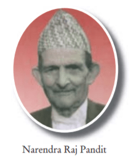

Facts:
Pandit Narendra Raj Pandey was the third Khajanchee of Nepal.
He was the son of Khajanchee Pandit Janak Raj Pandey.
He was the Khajanchee(Governor) from Jan 22, 1952 to April 22,1956
during the ruling period of King Tribhuwan.Notes were issued as a
MORU from Sadar Muluki Khana and for the first time Moru 1 was also
issued.Signature of Pandit Bharat Raj Pandey can be seen on the currency
notes of Moru 1, Moru 5, Moru 10 & Moru 100.